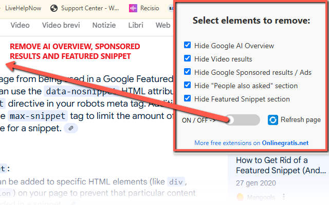

Hide Google AI Overview, Remove Sponsored Results and Snippet
Google search is getting busier every day, with AI answers, video rows, featured snippets, and an overwhelming amount of ads. If you wish to take back control of your search page, Google Cleaner is the solution.
This lightweight and intuitive extension allows you to hide unwanted elements from Google search results with a simple set of checkboxes and a power switch. Whether you want a minimal experience or need to focus during research, this extension offers you a cleaner, distraction-free interface.
Hide AI-generated overviews, remove sponsored advertisements, skip video blocks, get rid of the "People also ask" section, and eliminate the featured snippet at the top. Google Cleaner puts the power in your hands.
🧩 How to Use
- Install the extension from the Chrome Web Store.
- Perform any search on Google.
- Click the extension icon in the toolbar.
- Select the sections you want to hide and toggle ON.
- Click the Refresh button to apply your settings.
✅ Features
- Hide Google AI Overview section
- Remove video results and carousels
- Block all Google sponsored results (ads)
- Hide the "People also asked" questions block
- Remove featured snippet answer boxes
- Modern UI with ON/OFF switch
- Includes refresh button and persistent settings
- Supports all Google domains (e.g., .com, .it, .fr)
📷 Screenshots


Cut the noise from Google results and focus only on the information that matters to you. Google Cleaner is the productivity-friendly Chrome extension that makes your searches smarter and cleaner.
View on Chrome Web Store